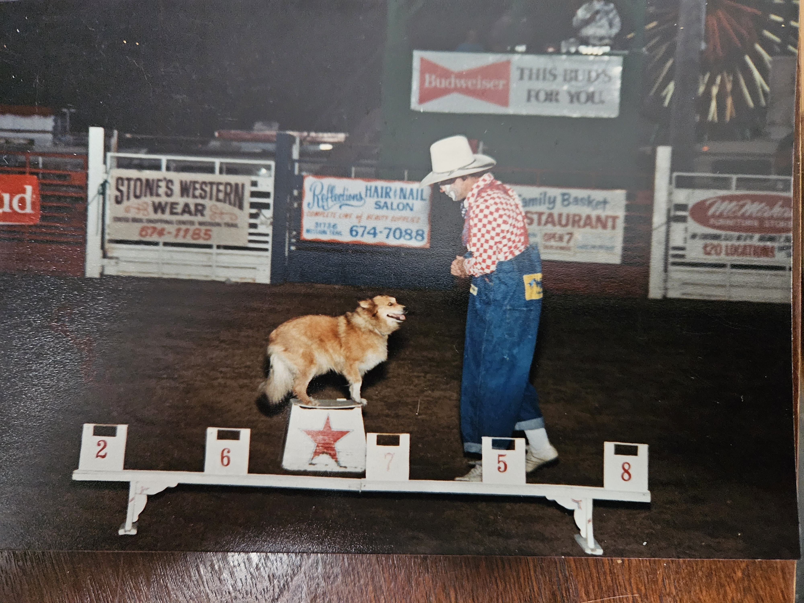
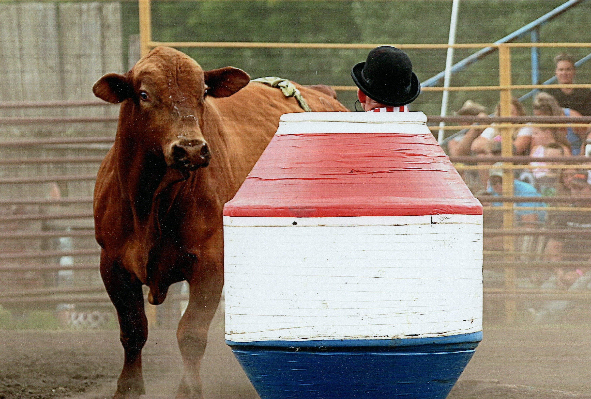

Meet Freddie Waltz

Before there was a Comedy Utility Toolbox, there was a young Marine who carried two things with him: a commitment to serve his country and a willingness to climb into a rodeo arena where most sensible people were trying to climb out.
Freddie Waltz has spent a lifetime collecting stories — from military service, rodeo arenas, comedy stages, family life, and all the strange little moments regular folks walk past every day without noticing.
That lifetime of observation eventually led to one simple idea:
Before the Punchline


Military service taught Freddie discipline, patience, adaptability, and how to pay attention. Those lessons followed him long after the uniform came off.
A good comedian watches people closely. So does a good Marine. Sometimes the only difference is whether you are holding a microphone or hoping nobody starts shooting.
The Marine Who Rode Into the Arena
While serving in the United States Marine Corps, Freddie also rodeoed — stepping into a world of livestock, dust, competition, showmanship, and controlled chaos.
Balancing military service with rodeo life gave Freddie a rare education in discipline, courage, timing, and reading an audience. Long before stand-up comedy stages and microphones, there were rodeo arenas, livestock, competition, and the kind of live performance lessons that can only be learned in the dust of the arena.
Those years of dedication to military rodeo, competition, and entertainment eventually led to a remarkable honor.
🏅 Honors & Recognition
Military Rodeo Cowboy Hall of Fame
2018 Inductee
"Honoring Those Who Rode and Served"
In 2018, Freddie Waltz was inducted into the Military Rodeo Cowboy Hall of Fame in recognition of a lifetime combining military service, rodeo competition, entertainment, and a commitment to preserving the proud traditions of military rodeo.
As a United States Marine who competed in rodeo while serving his country, Freddie's journey represents the unique bond between military discipline, western heritage, courage, and the ability to entertain audiences both inside and outside the arena.



The Characters, The Animals, and The Adventures
Over the years, Freddie developed comedy acts involving animals, characters, costumes, and unusual situations that made audiences laugh and wonder, “How in the world did he come up with that?”
The truth is simple:
Comedy is everywhere.
Sometimes it is a trained animal stealing the spotlight. Sometimes it is a ridiculous character in oversized shoes. And sometimes it is a husband standing outside Walmart holding a cardboard sign because his wife has been shopping for two hours.

From the Arena to the Comedy Club
Eventually, the journey brought Freddie to another kind of stage — stand-up comedy.
The dirt became a stage floor. The livestock became a crowd of strangers waiting to laugh. But the mission stayed the same:
Find the truth. Find the absurdity. Tell the story.
Like many comedians, Freddie collected notebooks filled with half-written jokes, observations, callbacks, stories, and ideas waiting for their moment.
There were plenty of ideas.
What was missing was a workshop to organize them.
Why the Comedy Utility Toolbox Was Built
The Comedy Utility Toolbox was born from a simple question:
“What would I have given for something like this when I first started?”
Not a machine that writes jokes.
Not a system that replaces creativity.
A workbench.
A collection of practical tools that help comedians explore ideas, discover new angles, organize material, and develop their own unique voice.
The same way a carpenter uses a hammer, a mechanic uses a wrench, and a cowboy trusts his saddle, a comedian should have tools designed specifically for the craft.
The Toolbox simply helps them find the path.
A Note From Freddie
I have spent my life wearing many hats.
Marine. Rodeo cowboy. Rodeo entertainer. Clown. Storyteller. Husband. Grandfather. Stand-up comedian.
Each one of those chapters gave me another story to tell and another reason to appreciate the power of laughter.
I built this Toolbox because I believe comedy is one of the greatest ways we connect with each other.
If these tools help one comedian take a thought scribbled on a napkin and turn it into a moment that makes an audience laugh, then every hour spent building it was worth it.
Welcome to the workshop.
— Freddie Waltz
← Return to Homepage